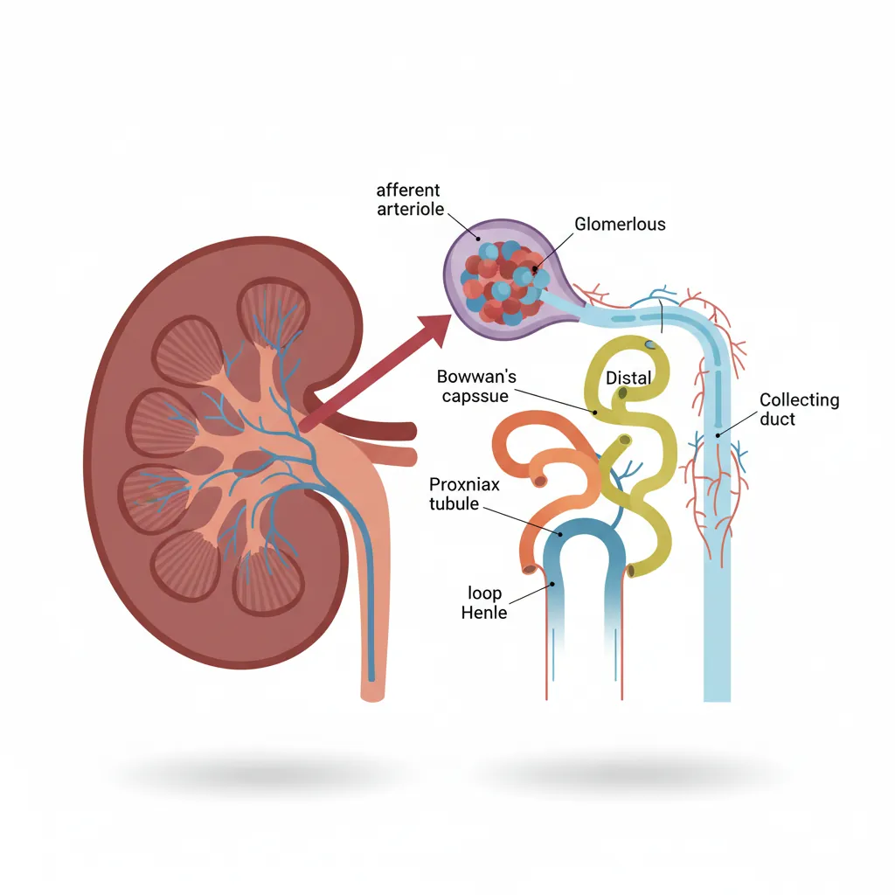
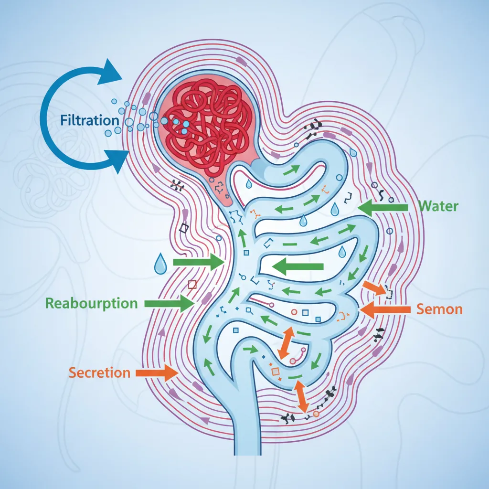
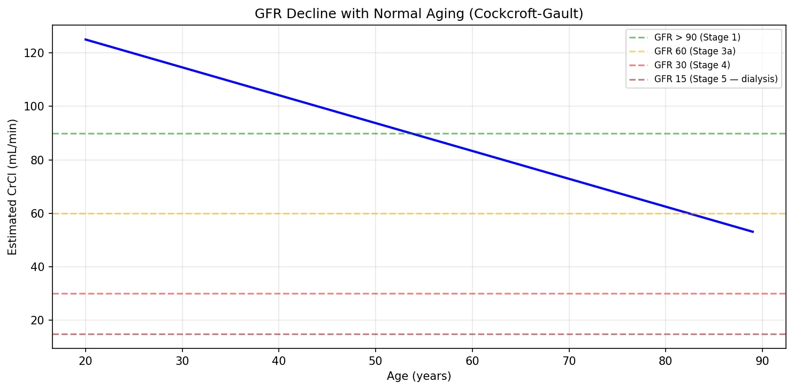
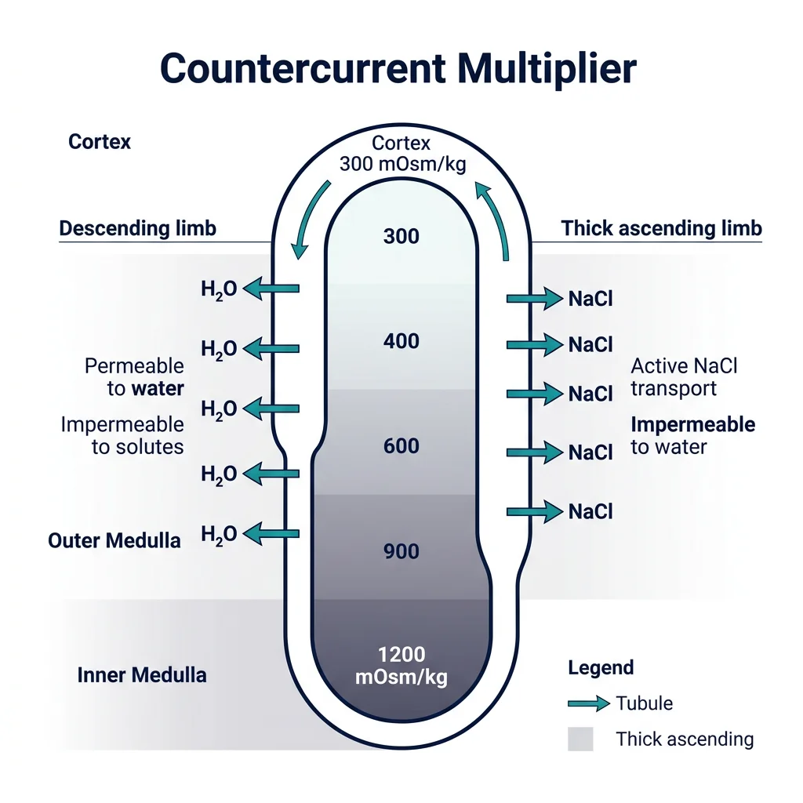
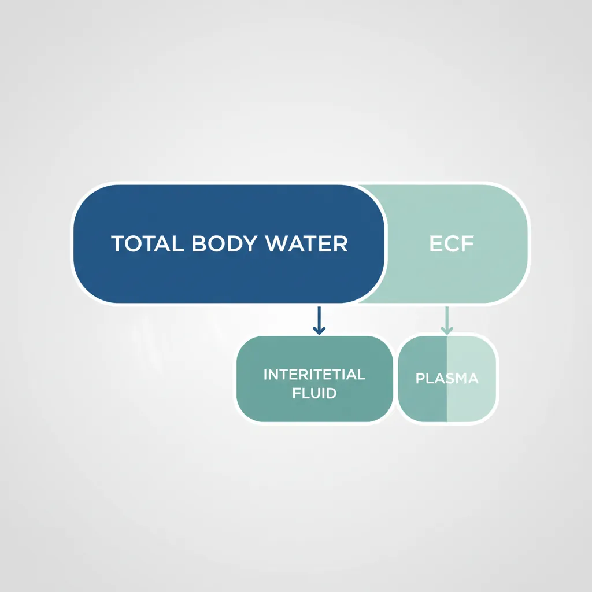
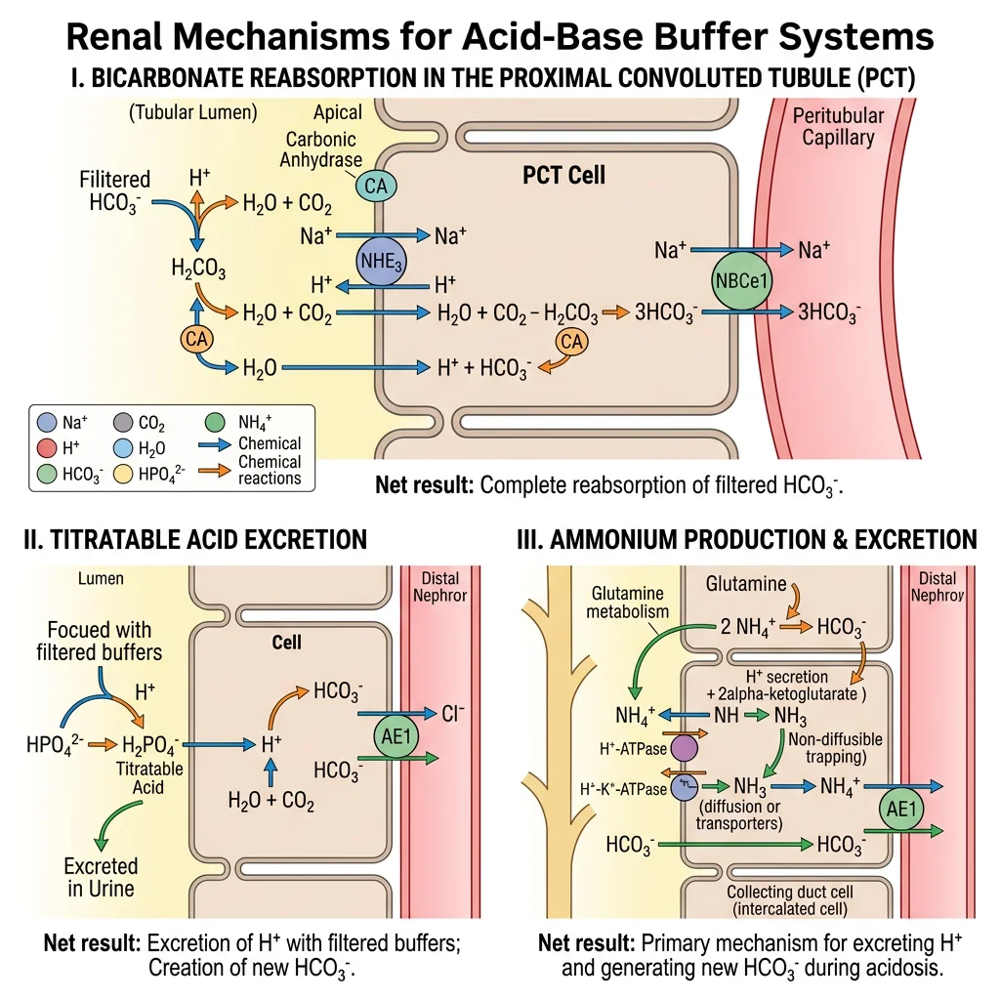

Physiology Mastery
Homeostasis & Feedback
Set points, feedback loops, allostasisNeurophysiology & Action Potentials
Neurons, action potentials, synapsesCardiac Electrophysiology & Hemodynamics
Heart rhythm, hemodynamics, cardiac outputRespiratory Mechanics & Gas Exchange
Breathing mechanics, gas exchange, V/QRenal Physiology & Fluid Balance
Nephron function, filtration, acid-baseGI Physiology & Absorption
Motility, secretion, nutrient absorptionEndocrine Regulation & Metabolism
Hormones, thyroid, adrenal, metabolismExercise Physiology & Adaptation
Acute responses, training adaptationsCellular & Membrane Physiology
Ion transport, signaling, second messengersBlood & Immune Physiology
Hematopoiesis, coagulation, immunityReproductive & Developmental
Reproduction, pregnancy, fetal physiologyIntegrative & Clinical Physiology
Stress, shock, sepsis, agingKidney Structure & Blood Flow
The kidneys are paired retroperitoneal organs, each about the size of a fist (~150 g), yet they receive a staggering 20–25% of cardiac output (~1,200 mL/min) — far more per gram of tissue than any other organ. This extraordinary blood flow isn't for the kidney's own metabolic needs; it's to enable the kidneys to filter, clean, and fine-tune the composition of the entire plasma volume roughly 60 times per day.

Nephron Anatomy
The nephron is the functional unit of the kidney. Each kidney contains approximately 1 million nephrons, and you cannot grow new ones — nephron loss is permanent. Each nephron has two components: a vascular component (glomerulus and peritubular capillaries) and a tubular component.
| Segment | Location | Primary Function | Key Transporters |
|---|---|---|---|
| Bowman's Capsule | Cortex | Collects glomerular filtrate | Passive filtration (no active transport) |
| Proximal Convoluted Tubule (PCT) | Cortex | Reabsorbs ~65% of filtered Na⁺, H₂O, glucose, amino acids, HCO₃⁻ | Na⁺/K⁺-ATPase, SGLT2, Na⁺/H⁺ exchanger (NHE3) |
| Descending Loop of Henle | Medulla | Water reabsorption (permeable to H₂O, impermeable to solutes) | Aquaporin-1 (AQP1) |
| Ascending Loop of Henle (thick) | Medulla → Cortex | NaCl reabsorption without water (diluting segment) | NKCC2 (Na⁺/K⁺/2Cl⁻ cotransporter) — furosemide target |
| Distal Convoluted Tubule (DCT) | Cortex | Fine-tuning of Na⁺ and Ca²⁺ | NCC (Na⁺/Cl⁻ cotransporter) — thiazide target |
| Collecting Duct | Cortex → Medulla | Final water and Na⁺ regulation; acid-base | ENaC (amiloride target), AQP2 (ADH-regulated) |
Renal Circulation
The kidney has a unique portal system — two capillary beds in series:
- Renal artery → Afferent arteriole → Glomerular capillaries (filtration — high pressure, ~60 mmHg)
- Efferent arteriole → Peritubular capillaries / Vasa recta (reabsorption — low pressure, ~13 mmHg)
Autoregulation maintains constant renal blood flow (RBF) and GFR across a MAP range of 80–180 mmHg through two mechanisms:
- Myogenic response: Increased pressure stretches afferent arteriolar smooth muscle → reflexive vasoconstriction (within seconds)
- Tubuloglomerular feedback (TGF): The macula densa (specialised cells in the thick ascending limb) senses NaCl concentration. High NaCl → release of adenosine/ATP → afferent arteriolar constriction → ↓ GFR (restores balance)
Filtration Barrier
The glomerular filtration barrier is a highly selective three-layer structure:
| Layer | Structure | Selectivity | Clinical Significance |
|---|---|---|---|
| 1. Fenestrated Endothelium | 70–100 nm pores between endothelial cells | Size barrier (blocks cells) | Damaged in thrombotic microangiopathies (HUS/TTP) |
| 2. Glomerular Basement Membrane (GBM) | Type IV collagen, laminin, heparan sulphate proteglycans | Size + charge barrier (negative charge repels albumin) | Anti-GBM disease (Goodpasture's); Alport syndrome (collagen IV mutation) |
| 3. Podocytes | Foot processes with slit diaphragms (nephrin protein) | Final size barrier (~8 nm slits) | Nephrotic syndrome — foot process effacement → massive proteinuria |
Core Functions
The kidney processes plasma through three fundamental mechanisms: filtration (at the glomerulus), reabsorption (from tubular lumen back to blood), and secretion (from blood into the tubular lumen). The amount of any substance in the final urine equals: Filtered – Reabsorbed + Secreted.

Glomerular Filtration Rate (GFR)
GFR is the volume of plasma filtered per unit time — the single most important measure of kidney function.
GFR = Kf × Net Filtration Pressure
Kf = filtration coefficient (permeability × surface area)
Net Filtration Pressure = PGC – PBS – πGC + πBS
Where: PGC = glomerular capillary hydrostatic pressure (~60 mmHg), PBS = Bowman's space hydrostatic (~15 mmHg), πGC = glomerular capillary oncotic (~29 mmHg), πBS ≈ 0
NFP ≈ 60 – 15 – 29 = ~16 mmHg
Normal GFR ≈ 125 mL/min = 180 L/day (but 99% is reabsorbed → ~1.5 L urine/day)
| Factor | Effect on GFR | Mechanism | Clinical Example |
|---|---|---|---|
| Afferent arteriole constriction | ↓ GFR | ↓ PGC | NSAIDs (inhibit prostaglandin-mediated vasodilation) |
| Efferent arteriole constriction | ↑ GFR (mild) | ↑ PGC (backs up pressure) | Angiotensin II (AT₁ receptors on efferent) |
| ↓ Plasma protein (↓ πGC) | ↑ GFR | Less opposing oncotic pressure | Liver cirrhosis, nephrotic syndrome |
| Ureteral obstruction (↑ PBS) | ↓ GFR | Increased pressure in Bowman's space opposes filtration | Kidney stones, BPH |
The ACE Inhibitor Paradox: Why GFR Drops Before It's Protected
A 60-year-old diabetic starts lisinopril (ACE inhibitor). Blood tests 2 weeks later show creatinine has risen from 1.0 to 1.3 mg/dL. Should you stop the drug?
- Mechanism: ACE inhibitors block angiotensin II → efferent arteriole dilates → ↓ PGC → ↓ GFR → ↑ creatinine
- The paradox: This acute GFR drop is protective — it reduces intraglomerular pressure, slowing the progression of diabetic nephropathy
- Rule of thumb: Up to a 30% rise in creatinine is acceptable and expected; do NOT stop the drug. Only stop if creatinine rises >30% or hyperkalaemia develops
Tubular Reabsorption & Secretion
Of the 180 L filtered daily, 99% is reabsorbed. The proximal tubule is the workhorse, reclaiming the bulk of everything:
| Substance | % Filtered that is Reabsorbed | Primary Site | Mechanism |
|---|---|---|---|
| Water | ~99% | PCT (65%), Loop (15%), CD (ADH-dependent) | Osmosis following solute reabsorption; AQP channels |
| Na⁺ | ~99.4% | PCT (65%), Loop (25%), DCT (5%), CD (3%) | Na⁺/K⁺-ATPase (basolateral); various apical transporters |
| Glucose | ~100% | PCT | SGLT2 (90%, low affinity, high capacity) + SGLT1 (10%) |
| Amino acids | ~100% | PCT | Na⁺-coupled co-transporters |
| HCO₃⁻ | ~80–90% | PCT (80%), Thick ascending limb (10%) | Na⁺/H⁺ exchanger; carbonic anhydrase |
| K⁺ | ~65–70% (PCT) | PCT + Loop; then secreted in CD | Paracellular (PCT); ROMK channels (CD — aldosterone-regulated) |
Secretion moves substances from peritubular capillary blood into the tubular lumen. Key secreted substances include:
- H⁺ — acid-base regulation (PCT, intercalated cells of CD)
- K⁺ — principal cells of collecting duct (aldosterone-stimulated)
- Organic anions/cations — drugs (penicillin, furosemide), toxins, uric acid (PCT)
- PAH (para-aminohippuric acid) — nearly completely secreted; used to measure renal plasma flow
Clearance Concepts
Renal clearance is the volume of plasma completely cleared of a substance per unit time. It's the gold standard for assessing kidney function:
Where: Ux = urine concentration, V = urine flow rate (mL/min), Px = plasma concentration
| Marker | Clearance Equals | Why | Clinical Use |
|---|---|---|---|
| Inulin | GFR (125 mL/min) | Freely filtered, not reabsorbed, not secreted | Gold standard GFR measurement (research) |
| Creatinine | ≈ GFR (slight overestimate) | Freely filtered + slightly secreted | Clinical GFR estimation (eGFR) |
| PAH | Effective RPF (~660 mL/min) | Freely filtered + completely secreted → 90% extracted in one pass | Renal plasma flow measurement |
| Glucose | 0 mL/min (normal) | Freely filtered but 100% reabsorbed | Non-zero clearance = glucosuria (diabetes) |
import numpy as np
import matplotlib.pyplot as plt
# GFR estimation using Cockcroft-Gault equation
def cockcroft_gault(age, weight_kg, serum_cr, is_female=False):
"""Estimate creatinine clearance (mL/min) — proxy for GFR."""
ccr = ((140 - age) * weight_kg) / (72 * serum_cr)
if is_female:
ccr *= 0.85 # Correction for lower muscle mass
return ccr
# Example: 55-year-old male, 75 kg, creatinine 1.2 mg/dL
age, weight, cr = 55, 75, 1.2
gfr_est = cockcroft_gault(age, weight, cr)
print(f"Estimated CrCl: {gfr_est:.1f} mL/min")
print(f" Age: {age}, Weight: {weight} kg, Serum Cr: {cr} mg/dL")
# Show GFR decline with age (normal aging)
ages = np.arange(20, 90)
gfr_values = [cockcroft_gault(a, 75, 1.0) for a in ages]
plt.figure(figsize=(10, 5))
plt.plot(ages, gfr_values, 'b-', linewidth=2)
plt.axhline(y=90, color='green', linestyle='--', alpha=0.5, label='GFR > 90 (Stage 1)')
plt.axhline(y=60, color='orange', linestyle='--', alpha=0.5, label='GFR 60 (Stage 3a)')
plt.axhline(y=30, color='red', linestyle='--', alpha=0.5, label='GFR 30 (Stage 4)')
plt.axhline(y=15, color='darkred', linestyle='--', alpha=0.5, label='GFR 15 (Stage 5 — dialysis)')
plt.xlabel('Age (years)')
plt.ylabel('Estimated CrCl (mL/min)')
plt.title('GFR Decline with Normal Aging (Cockcroft-Gault)')
plt.legend(fontsize=8)
plt.grid(True, alpha=0.3)
plt.tight_layout()
plt.show()

Concentration of Urine
The ability to produce concentrated urine is one of the most elegant achievements of renal physiology. Humans can concentrate urine to about 1,200 mOsm/kg (4× plasma osmolality of ~300 mOsm/kg) — saving litres of water daily. Desert animals like the kangaroo rat can reach 5,000 mOsm/kg! This concentrating ability depends on the countercurrent multiplier system of the loop of Henle.

Countercurrent Multiplier
The countercurrent multiplier creates an osmotic gradient in the medullary interstitium — from ~300 mOsm/kg at the corticomedullary junction to ~1,200 mOsm/kg at the papilla tip. Here's the step-by-step logic:
- Thick ascending limb actively pumps NaCl out into the interstitium (via NKCC2) but is impermeable to water — the "single effect" creates a 200 mOsm/kg gradient at each horizontal level
- Thin descending limb is permeable to water but not solutes — water leaves by osmosis into the hypertonic interstitium, concentrating the tubular fluid
- Countercurrent flow (descending fluid goes down while ascending fluid goes up) multiplies the single effect along the entire length of the loop, creating the steep corticomedullary gradient
- Urea recycling contributes ~50% of the inner medullary osmolality — urea is reabsorbed from the collecting duct back into the deep medulla via UT-A1/A3 transporters (ADH-stimulated)
Loop of Henle Physiology
The loop of Henle has distinct segments with radically different properties:
| Segment | Permeability | What Happens | Net Effect on Tubular Fluid |
|---|---|---|---|
| Thin Descending | H₂O: ✓ | NaCl: ✗ | Water leaves into hypertonic interstitium | Fluid becomes concentrated (up to ~1,200 mOsm/kg at hairpin) |
| Thin Ascending | H₂O: ✗ | NaCl: ✓ (passive) | NaCl diffuses out passively | Fluid begins to dilute |
| Thick Ascending | H₂O: ✗ | NaCl: active transport | NKCC2 pumps Na⁺/K⁺/2Cl⁻ out; Mg²⁺/Ca²⁺ reabsorbed paracellularly | Fluid is hypotonic (~100 mOsm/kg) — "diluting segment" |
Collecting Duct Regulation
The collecting duct is where the kidney makes its final decision: dilute or concentrated urine? This depends on ADH (antidiuretic hormone / vasopressin) from the posterior pituitary.
- With ADH: AQP2 water channels are inserted into the apical membrane of principal cells → water reabsorbed into the hypertonic medullary interstitium → concentrated urine (up to 1,200 mOsm/kg)
- Without ADH: No AQP2 insertion → collecting duct remains impermeable → dilute urine exits (~50 mOsm/kg)
ADH Effects
| ADH Status | Stimulus | Collecting Duct | Urine Osmolality | Urine Volume |
|---|---|---|---|---|
| High ADH | Dehydration, ↑ plasma osmolality (>285 mOsm/kg), hypovolaemia | AQP2 inserted → maximally permeable | Up to 1,200 mOsm/kg | ~0.5 L/day |
| Low ADH | Overhydration, ↓ plasma osmolality, alcohol intake | No AQP2 → impermeable | ~50 mOsm/kg | Up to 18 L/day |
Diabetes Insipidus: When the Concentrating Mechanism Fails
A 32-year-old woman develops polydipsia (drinking 8 L/day) and polyuria (urinating 8 L/day of very dilute urine) after neurosurgery near the pituitary. Serum Na⁺ = 148 mEq/L (high), urine osmolality = 80 mOsm/kg (dilute).
- Diagnosis: Central Diabetes Insipidus — surgical damage to ADH-producing neurons in the supraoptic/paraventricular nuclei
- Mechanism: No ADH → no AQP2 insertion → collecting duct impermeable to water → massive water loss
- Confirmatory test: Water deprivation test → urine remains dilute; then give desmopressin (synthetic ADH) → urine concentrates >50% → confirms central DI (vs. nephrogenic DI where kidneys don't respond to ADH)
- Treatment: Desmopressin (DDAVP) intranasal spray
Fluid & Electrolyte Balance
The kidney is the body's "thermostat" for fluid and electrolyte composition. Total body water (~60% of body weight in males, ~50% in females) is distributed across two compartments: intracellular fluid (ICF, ~2/3) and extracellular fluid (ECF, ~1/3). The ECF is further divided into plasma (25%) and interstitial fluid (75%). The kidney precisely controls ECF volume and composition.

Sodium Regulation
Na⁺ is the primary determinant of ECF volume. Where sodium goes, water follows. Controlling sodium controls blood volume and blood pressure.
| Regulator | Stimulus | Effect on Na⁺ | Effect on Volume/BP |
|---|---|---|---|
| Aldosterone | Angiotensin II, hyperkalaemia | ↑ Na⁺ reabsorption (ENaC in CD) | ↑ ECF volume, ↑ BP |
| ANP / BNP | Atrial/ventricular stretch (volume overload) | ↓ Na⁺ reabsorption | ↓ ECF volume, ↓ BP |
| Angiotensin II | Low BP, low Na⁺ at macula densa | ↑ Na⁺ reabsorption (PCT — stimulates NHE3) | ↑ ECF volume, ↑ BP |
| Sympathetic Nerves | Low BP | ↑ Na⁺ reabsorption (PCT); ↑ renin release | ↑ ECF volume, ↑ BP |
Potassium Balance
K⁺ homeostasis is critically important because even small changes in extracellular K⁺ can be lethal — it directly affects cardiac membrane potential and rhythm. Normal serum K⁺: 3.5–5.0 mEq/L.
Hyperkalaemia (>5.5 mEq/L): Depolarises cardiac membranes → peaked T waves → widened QRS → sine wave → asystole. Treat with IV calcium (membrane stabiliser), insulin + glucose (shifts K⁺ intracellularly), and kayexalate/patiromer (GI elimination).
Hypokalaemia (<3.5 mEq/L): Hyperpolarises membranes → U waves, flattened T waves, ST depression → can trigger fatal arrhythmias especially with digoxin.
The kidney regulates K⁺ primarily through secretion in the collecting duct by principal cells:
- Aldosterone → ↑ Na⁺ reabsorption via ENaC → creates lumen-negative potential → drives K⁺ secretion through ROMK channels
- High tubular flow (e.g., loop diuretics) → washes away K⁺ from the lumen → maintains gradient for more secretion → explains diuretic-induced hypokalaemia
- Acidosis → H⁺/K⁺ exchange across cells → K⁺ shifts out of cells → hyperkalaemia (but total body K⁺ may actually be low)
Calcium & Phosphate Handling
The kidney works in concert with PTH, vitamin D, and calcitonin to maintain calcium and phosphate balance:
| Hormone | Effect on Kidney | Effect on Ca²⁺ | Effect on PO₄³⁻ |
|---|---|---|---|
| PTH | ↑ Ca²⁺ reabsorption (DCT); ↓ PO₄³⁻ reabsorption (PCT); ↑ 1α-hydroxylase (activates vitamin D) | ↑ Serum Ca²⁺ | ↓ Serum PO₄³⁻ |
| Calcitriol (1,25-D₃) | ↑ Ca²⁺ and PO₄³⁻ reabsorption (intestine + kidney) | ↑ Serum Ca²⁺ | ↑ Serum PO₄³⁻ |
| Calcitonin | ↓ Ca²⁺ reabsorption | ↓ Serum Ca²⁺ (minor role) | — |
| FGF-23 | ↓ 1α-hydroxylase; ↓ PO₄³⁻ reabsorption | ↓ (indirectly) | ↓ Serum PO₄³⁻ (phosphaturic) |
Osmolality Control
Plasma osmolality is tightly regulated at 275–295 mOsm/kg by the ADH-thirst axis:
- Osmoreceptors in the hypothalamus (organum vasculosum of the lamina terminalis — OVLT) detect >1–2% changes in osmolality
- ↑ Osmolality → ↑ ADH release + ↑ thirst → water retention + water intake → osmolality falls
- ↓ Osmolality → ↓ ADH → water excretion → osmolality rises
Acid-Base Regulation
The kidney is the slow but powerful arm of acid-base regulation (taking hours to days, unlike the lungs which act in minutes). The body generates ~70 mEq of non-volatile acid daily from protein metabolism. The kidneys must excrete this acid load while reclaiming all filtered bicarbonate — the body's primary buffer.

Bicarbonate Handling
The kidney filters approximately 4,320 mEq of HCO₃⁻/day (180 L × 24 mEq/L). Nearly all must be reclaimed — losing even a fraction would cause fatal acidosis.
1. Apical Na⁺/H⁺ exchanger (NHE3) secretes H⁺ into the lumen
2. H⁺ + filtered HCO₃⁻ → H₂CO₃ → CO₂ + H₂O (catalysed by luminal carbonic anhydrase IV)
3. CO₂ diffuses into the cell → CO₂ + H₂O → H₂CO₃ → H⁺ + HCO₃⁻ (catalysed by intracellular carbonic anhydrase II)
4. HCO₃⁻ exits basolaterally via Na⁺/HCO₃⁻ cotransporter (NBC1)
Drug target: Acetazolamide (carbonic anhydrase inhibitor) blocks this process → HCO₃⁻ wasted in urine → metabolic acidosis. Used to treat altitude sickness and glaucoma.
Hydrogen Secretion
Beyond reclaiming bicarbonate, the kidney must excrete the ~70 mEq of new acid produced daily. This is accomplished by the α-intercalated cells of the collecting duct:
- Apical H⁺-ATPase and H⁺/K⁺-ATPase actively secrete H⁺ into the lumen
- For each H⁺ secreted, one new HCO₃⁻ is generated and returned to the blood (via basolateral Cl⁻/HCO₃⁻ exchanger — pendrin on β-intercalated cells in alkalosis)
- Minimum urine pH is ~4.5 (1,000:1 gradient) — can't go lower without damaging the epithelium
Buffer Systems
Because minimum urine pH is limited (4.5), urinary buffers are essential for excreting daily acid without crashing pH:
| Buffer System | Buffering Reaction | Clinical Significance |
|---|---|---|
| Titratable Acid (HPO₄²⁻) | H⁺ + HPO₄²⁻ → H₂PO₄⁻ | Accounts for ~30% of daily acid excretion; limited by filtered phosphate |
| Ammonium (NH₃/NH₄⁺) | NH₃ + H⁺ → NH₄⁺ (trapped — can't cross back) | Accounts for ~70% of daily acid excretion; can increase 10× in chronic acidosis — the kidney's adaptable buffer |
• Type 1 (Distal): Failed H⁺ secretion in CD → cannot acidify urine below pH 5.5 → hypokalaemic metabolic acidosis
• Type 2 (Proximal): Failed HCO₃⁻ reabsorption in PCT → bicarbonaturia → hypokalaemic metabolic acidosis
• Type 4 (Hyperkalaemic): Aldosterone deficiency/resistance → ↓ K⁺ secretion + ↓ NH₃ production → hyperkalaemic metabolic acidosis. Common in diabetes.
Advanced Topics
This section integrates kidney physiology with clinical practice — understanding how the renal system controls blood pressure and how it fails, with the pharmacological tools we use to intervene.
RAAS & Blood Pressure Control
The Renin-Angiotensin-Aldosterone System is the kidney's most powerful tool for controlling blood pressure and ECF volume. Three signals trigger renin release from juxtaglomerular cells:
- ↓ Renal perfusion pressure (detected by baroreceptors in afferent arteriole)
- ↓ NaCl at macula densa (sensed by NKCC2-dependent mechanism)
- Sympathetic nerve stimulation (β₁ receptors on JG cells)
The cascade: Renin → Angiotensinogen → Angiotensin I → (ACE in pulmonary endothelium) → Angiotensin II → multiple target effects. Angiotensin II also stimulates aldosterone from the adrenal zona glomerulosa.
Diuretics Mechanisms
Diuretics are among the most commonly prescribed drugs. Understanding their mechanism requires knowing exactly where they act in the nephron:
| Class | Example | Site | Target | Effect | Side Effects |
|---|---|---|---|---|---|
| Carbonic Anhydrase Inhibitor | Acetazolamide | PCT | CA II & IV | ↓ HCO₃⁻ reabsorption | Metabolic acidosis, hypokalaemia |
| Osmotic | Mannitol | PCT, Loop | Osmotic force | Retains water in tubule | Volume expansion initially |
| Loop | Furosemide | Thick ascending limb | NKCC2 | ↓ NaCl reabsorption; abolishes medullary gradient | Hypokalaemia, hyponatraemia, ototoxicity |
| Thiazide | Hydrochlorothiazide | DCT | NCC | ↓ NaCl reabsorption; ↑ Ca²⁺ reabsorption | Hypokalaemia, hyperuricaemia, hyperglycaemia |
| K⁺-sparing | Spironolactone, Amiloride | Collecting duct | Aldosterone receptor / ENaC | ↓ Na⁺ reabsorption, ↓ K⁺ secretion | Hyperkalaemia, gynaecomastia (spironolactone) |
Renal Failure Physiology
Renal failure represents the ultimate breakdown of the kidney's regulatory functions:
| Feature | Acute Kidney Injury (AKI) | Chronic Kidney Disease (CKD) |
|---|---|---|
| Timeline | Hours to days | Months to years |
| GFR Change | Rapid decline | Gradual, irreversible decline |
| Common Causes | Pre-renal (hypovolaemia), intrinsic (ATN, glomerulonephritis), post-renal (obstruction) | Diabetes, hypertension, polycystic kidney disease |
| Reversibility | Often reversible if caught early | Irreversible; progression slowed by ACEi/ARBs, SGLT2i |
| Key Lab Findings | ↑ Creatinine, ↑ BUN (rapidly), ↓ urine output | ↑ Creatinine (slowly), anaemia (↓ EPO), hyperphosphataemia, secondary hyperparathyroidism |
| Complications | Hyperkalaemia, acidosis, fluid overload | Uraemia, renal osteodystrophy, cardiovascular disease, anaemia |
Practice Problems
Test your understanding of renal physiology:
- If inulin clearance = 120 mL/min, plasma creatinine = 1.0 mg/dL, urine creatinine = 150 mg/dL, and urine flow = 1 mL/min, what is the creatinine clearance? Why is it different from inulin clearance?
- A patient on furosemide develops muscle weakness. Serum K⁺ = 2.8 mEq/L. Explain the mechanism of hypokalaemia.
- Patient with serum Na⁺ = 125, urine osmolality = 600, serum osmolality = 260. What is the most likely diagnosis? (Hint: think about ADH.)
- Calculate filtration fraction if GFR = 125 mL/min and RPF = 660 mL/min. What happens to FF with efferent arteriole constriction?
Interactive Tool
Use this Nephron Function Analyser to document renal parameters and generate a comprehensive report. Enter patient data and download as Word, Excel, or PDF.
Nephron Function Analyser
Enter renal function parameters for a comprehensive nephron analysis report. Download as Word, Excel, or PDF.
Conclusion & Next Steps
In this article, we explored the kidney as the body's master regulator of fluid, electrolyte, and acid-base homeostasis. We traced the journey of plasma through the nephron — from glomerular filtration through the intricate tubular processing that reclaims 99% of filtered water and solutes. The countercurrent multiplier system emerged as a brilliant engineering solution for urine concentration, while the RAAS system revealed how the kidney controls blood pressure on a systemic scale.
We also examined the clinical consequences when these systems fail — from renal tubular acidosis to acute kidney injury and chronic kidney disease — and how pharmacological tools (diuretics, ACE inhibitors, SGLT2 inhibitors) leverage nephron physiology for therapeutic benefit.
Next, we move to another major organ system that processes the raw materials the kidney must handle — the gastrointestinal tract, where nutrients are digested, absorbed, and delivered to the circulation for the kidney to regulate.